Identifying real problems and building physical solutions
I am a mechanical engineering student at the University of Texas at Austin (B.S., expected May 2029,
GPA 4.00/4.00). This past summer I worked as a River Engineering Intern at Southwest River Engineering
in Pagosa Springs, CO, where I used HEC-RAS hydraulic modeling and Civil 3D surface design to support
floodplain permitting and post-flood recovery projects.
I'm also a Systems Subteam member for Texas Flight, where I have designed and fabricated
banner-deployment and cargo holding mechanisms for competition aircraft, and I previously served as my
team's Mechanical Lead in UT's IEEE RAS Robotathon competition, where the projectile-launching mechanism
I built was awarded Best Design. I am a University Honors student (Fall 2025, Spring 2026) as well as a
National Merit Scholar Finalist.
Southwest River EngineeringTexas FlightIEEE RAS Robotathon
Build plateDrag to rotate, scroll to zoom
VIEWER OFFLINE Open a project below for CAD renders.
> NOW PRINTING 1/3
VTOL DRONE INTERCEPTOR
AIRFRAME~3" x 12" bullet fuselage
PROPULSION5" props / 1960KV / 6S
ROT 0/0 ZOOM 100%
Projects
Click any card for the full spec sheet: objective, constraints, key decisions, iteration, results, and what failed along the way.
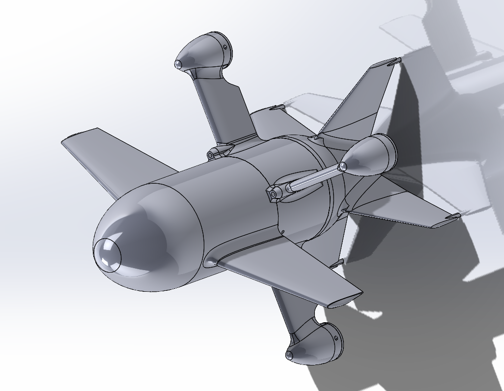
In progress
Independent build, 06/2026 – Present
3D-Printed VTOL Drone Interceptor
A compact, 3D-printed VTOL aircraft that flies as a multirotor for takeoff and landing and transitions to efficient winged forward flight — inspired by Ukrainian interceptor drone designs.
Open spec sheet
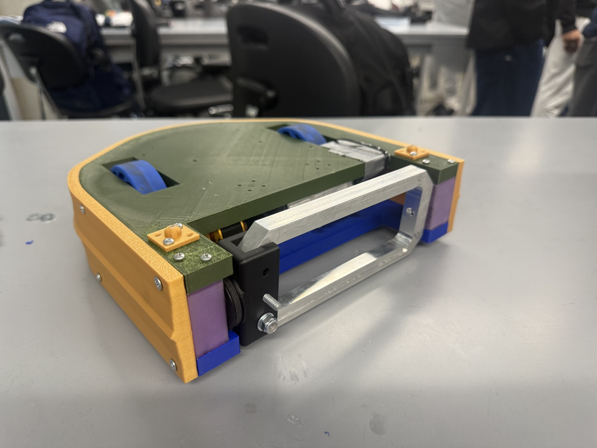
SPARC beetleweight, 01/2026 – 05/2026
Beetleweight Combat Robot
A ≤3 lb combat robot on a $50 budget: invertible chassis, belt-driven spinner, and a won match after an axle failure taught a hard lesson about print orientation.
Open spec sheet
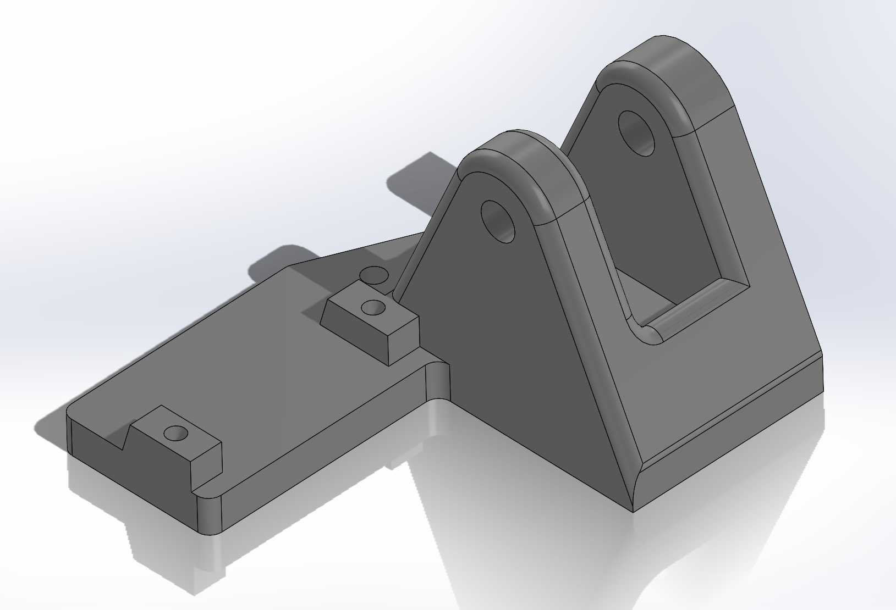
Texas Flight, 09/2025 – 05/2026
RC Plane Banner Release Mechanism
A pin-slot mechanism that releases a banner mid-flight, actuated remotely through the plane's controller. Released up to 7 kg in testing.
Open spec sheet
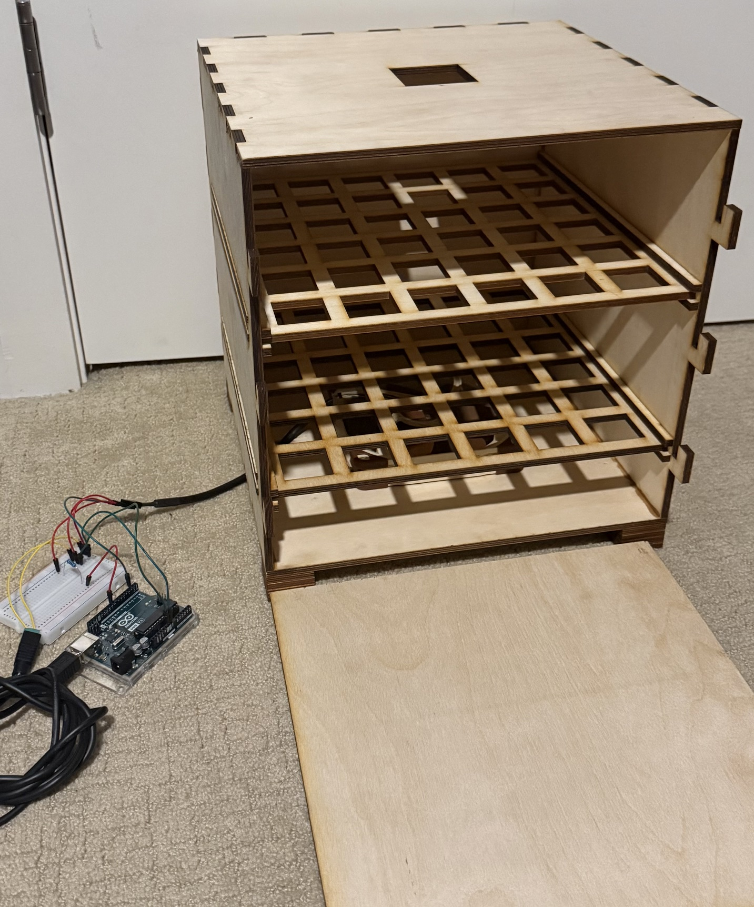
Product design, 10/2025 – Present
Odor-Reducing Laundry Hamper
A hamper that actively reduces odor buildup in stored clothing through airflow management, rather than passive storage.
Open spec sheet
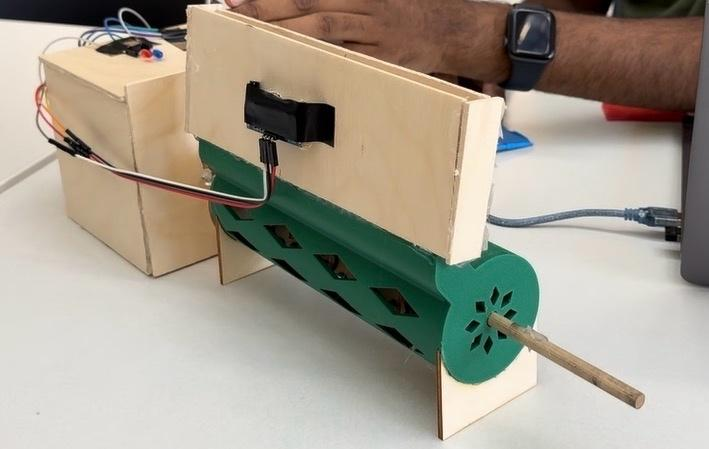
Rapid-prototyping competition, 10/2025
The Borrow Box — Automatic Pencil Dispenser
Built in a two-day competition to help K-12 teachers manage classroom supplies. Awarded Best Technical Design among 10+ teams.
Open spec sheet
Experience & Skills
River Engineering Intern
Southwest River Engineering, Pagosa Springs, CO
Summer 2026
Used HEC-RAS hydraulic modeling and Civil 3D surface design to support floodplain permitting and post-flood recovery projects.
Systems Subteam Member
Texas Flight
Current
Designed and fabricated banner-deployment and cargo holding mechanisms for competition aircraft.
Mechanical Lead
UT IEEE RAS Robotathon
Built the team's projectile-launching mechanism, which was awarded Best Design.
Education
The University of Texas at AustinExpected May 2029
Design a compact, 3D-printed VTOL aircraft that flies as a multirotor for takeoff/landing and transitions
to efficient winged forward flight, using off-the-shelf FPV components in a custom modular chassis —
inspired by Ukrainian interceptor drone designs.
Main CAD view: bullet fuselage, NACA 2412 wing, and flat-arm layout.
Manufacturing: every part has to print on UT Makerspace's Bambu printers (~256×256mm bed) within their 5-hour print-time limit — this drove the modularity of the design
Size: 5" prop class drone, 1960KV motors, 6S LiPo battery
Key Decisions
Added NACA 2412 wings so the aircraft generates real aerodynamic lift instead of relying on thrust alone.
Simplified the arms to flat, symmetric airfoils once it was clear they weren't contributing meaningful lift
at their angle to the airflow and not worth the added drag. Chose a tractor motor layout over pusher for
cleaner airflow exiting the props.
Iteration
Iterations of the design consisted of improving aerodynamics and assembly of modular components, while
reducing weight. Arm geometry and tail layout each went through multiple dead ends before converging — see
Failures & Solutions below.
Status & Result
CAD is finalized around the bullet fuselage, NACA 2412 wing, and flat-arm layout. FEA of the motor arms
confirms that they are strong enough to support the high-thrust motors without breaking. Propulsion and
avionics (stack, motors, props, battery, charger) are selected. Next milestone: first print and build.
Retrospective
The print-bed and time constraints at the makerspace ended up shaping the airframe almost as much as the
aerodynamics did, which made designing a smooth bullet fuselage into fabricatable parts its own design
problem.
Failures & Solutions
Arm geometry
I initially designed the arms to be airfoiled for aerodynamic efficiency but then realized I could not
route the motor wires entirely through the arm due to the low motor placement on the arm in my current
tractor motor configuration. My first solution was to use only the leading edge of the airfoil, extending
the maximum thickness of the arm down to the trailing edge where I could fit the motor wires through the arm
completely. I wanted to improve the strength of the arms as well as how much lift they could generate, so I
swept the leading edge to create a trapezoidal shape. However, I realized that the arms weren't worth using
as lifting surfaces because I designed them to be at a 45 degree angle to the airflow, and they were not
optimized for lift due to their cross-sectional shape. These flaws led me back to my initial airfoiled
design, with a simpler solution: I made a flat airfoiled design to maximize aerodynamic efficiency and cut a
small gap between the motor housing and arm on the trailing edge to route wiring without reintroducing the
original problem.
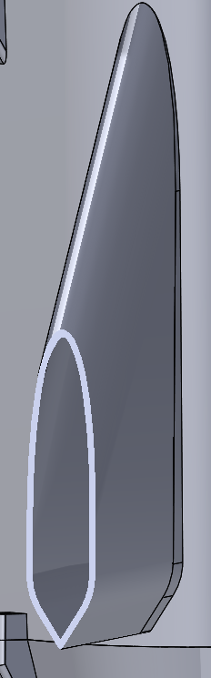
REV AInitial
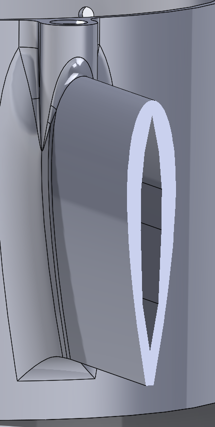
FINALFinal
Tail fin / antenna conflict
Because this was designed as a VTOL drone, my designs revolved around vertical landings on the tail of
the drone. However, as I researched more about the internal components I would need to fly the drone, I
learned how electronic interference from the battery and motors impacts the drone's receiver. I realized the
tail was the optimal place for the receiver antenna, even though mounting the antenna on the tail created a
ground-clearance problem on vertical landing. Rather than placing the antenna somewhere less aerodynamically
stable and more exposed to electrical interference, I solved this by sweeping the tail fins back, and adding
small landing legs to the end of the fins for extra ground clearance.
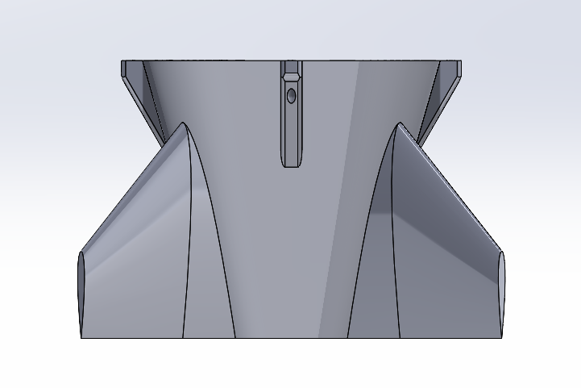
REV AInitial
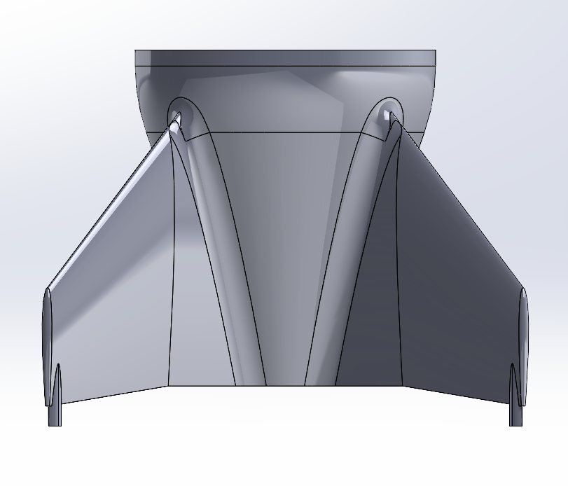
FINALFinal
Early assembly conflicts
My initial versions of each section were designed around wiring simplicity without checking real
assembly clearance, as some components physically couldn't connect once modeled together. One of my goals
of this project was to practice considering the bigger picture of how everything would assemble in the real
world and to consciously design connecting features between parts that would allow me to easily assemble and
disassemble the drone. After each iteration of my design, I made sure to consider how I designed each part to
connect, and I caught many mistakes I was able to fix, such as the motors having no way to screw into the
fuselage, or having no way to fit the battery into my internal component housing.
Robotics / Combat Systems
Beetleweight Combat Robot
SPARC Beetleweight Class : 01/2026 – 05/2026
SolidWorks3D PrintingFEA
Design and fabricate a beetleweight (≤3 lb) combat robot under SPARC competition rules, prioritizing
simplicity, mobility, and offensive capability within a strict budget.
Exterior
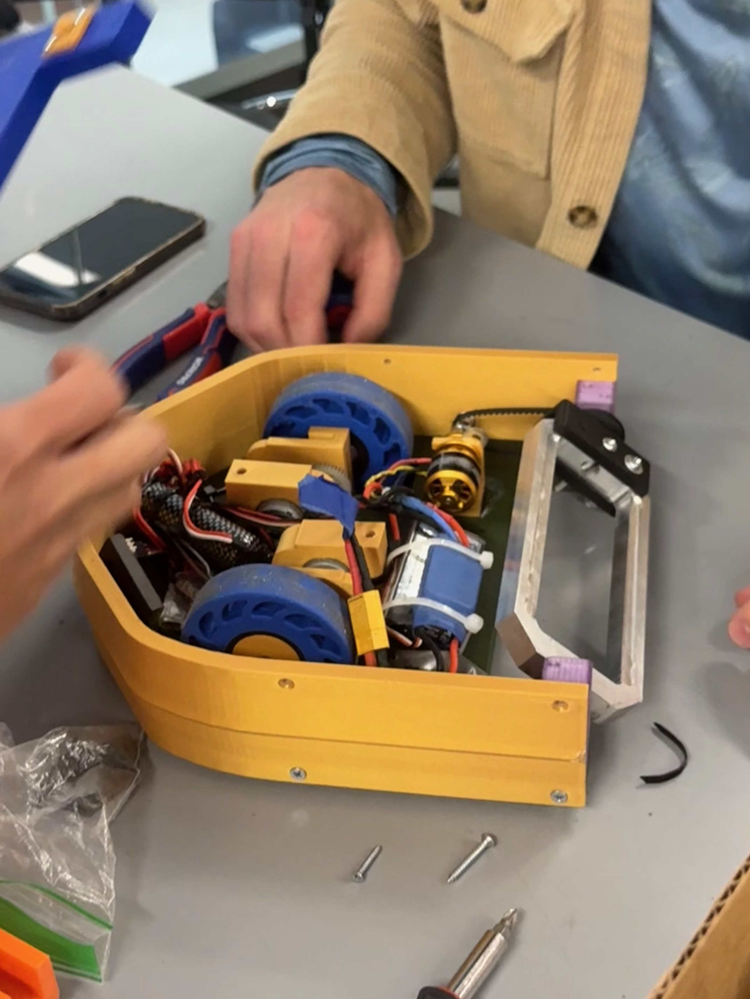
Internals
Constraints
Weight: 3 lb max (SPARC beetleweight class)
Budget: $50 cap on new components — forced reuse of stock parts wherever possible
Weapons: restricted to kinetic systems only
Starting platform: Rhybor AWD RC car, with motors, battery, and receiver identified as reuse candidates
Manufacturing: built at UT's makerspace, limited in component manufacturing to 3D printers and laser cutters
Key Decisions
Used a two-motor tank drive over the stock AWD layout for zero-radius turning and traded four-wheel-drive traction for a more maneuverable two-wheel setup.
Designed the chassis to be fully invertible — mirrored upper/lower panels with wheels extending out to both faces so the robot stays drivable if flipped.
Split materials by function: PETG for the chassis (impact resistance), PLA for armor and sliders (lower friction).
Connected the weapon motor to the spinner through a belt rather than a rigid drivetrain, so the belt could slip under sudden impact, which protects the motor and gear train from impact loads at the cost of some weapon speed recovery time after a hit.
Iteration
Reworked the slider profile from flat to semicircular, cutting friction and letting the robot roll over arena
floor irregularities instead of snagging. Also swapped the weapon dowels from wood to metal to reduce
friction.
Status & Result
The robot was successfully fabricated. The first match ended early due to an axle failure. After addressing
this, the robot won a later match in the competition.
Retrospective
Static FEA on 3D-printed parts can be inaccurate because it can't capture how print orientation changes
strength along different axes, and that gap is exactly what took the robot out of its first match despite a
clean analysis. With more time, the next version would use a lower-KV weapon motor built for torque instead
of RPM, choose print orientation based on actual load direction rather than default settings, and consider a
simpler direct-drive weapon system to remove a failure point.
Failures & Solutions
Weapon motor mismatch
The brushless motor selected was originally built for RC aircraft propellers — high KV rating (high RPM,
low torque). The motor couldn't produce enough torque to spin up the aluminum spinner's full mass, forcing my
team to cut material out of the spinner to reduce its rotational inertia and decreasing the effectiveness of
the weapon.
Pulley failure and belt redesign
My team originally drove the spinner through a 15-tooth pulley for a set gear ratio, but the motor couldn't
sustain the torque needed to turn it. I removed the pulley and ran the timing belt directly off the motor
shaft, letting the motor accelerate the belt through friction alone, which allowed our weapon to spin without
the motor stalling.
Axle failure in competition
FEA predicted the 3D-printed axles would survive normal driving loads with a wide margin (FOS of 37). In
the first match, one axle broke almost immediately. The likely cause was print orientation because the axles
were printed with layers running parallel to the shear plane, the weakest orientation for a 3D-printed part
under shear, which a standard static FEA using idealized isotropic material properties doesn't capture. This
was the clearest lesson of the project: passing FEA with a bulk material model doesn't guarantee real-world
strength if print orientation isn't accounted for too.
Mechanism Design / Competition Aircraft
RC Plane Banner Release Mechanism
Texas Flight : 09/2025 – 05/2026
SolidWorks3D PrintingMechanism Design
Design a mechanism to release a banner mid-flight from an RC plane, actuated remotely through the plane's
controller.
Final CAD design: pin-slot release driven by a single servo.
Constraints
Actuation limited to a single 180° rotating servo
Manufacturing limited to UT Makerspace tools (3D printing)
Mounting location, servo spec, and connecting hardware were still being finalized by the rest of the team in parallel with the mechanism's design, so the target interface and size envelope shifted several times during development
Overall aircraft dimensions were also still evolving during the mechanism's design phase, since the plane itself was being developed concurrently. This constrained how much size and weight budget was available for the mechanism at any given point
Budget: the only purchase allocated to this mechanism was the final servo
Key Decisions
Chose a pin-slot release mechanism over more complex alternatives for its simplicity and small footprint,
which was important given how little stable size budget was available while the aircraft design was still
moving.
Iteration
Initial design used a spool-and-rope system pulling a pin, sized to reliably release the banner without
failure. To cut weight and size, switched to a bent metal servo pushrod acting directly as the release pin,
connected straight to the servo, which was a smaller, lighter final design.
Status & Result
Mechanism was completed and installed for competition use, and released up to 7kg successfully in prior
testing. In competition, high wind conditions bent the metal pin under load while the plane was flying into
the wind, preventing the clean release seen in testing. During the attempted landing with the banner still
attached, the battery was too low to power a release attempt, and the plane was blown off course and crashed
before the banner could be released.
REV AInitial Design — Strength TestFINALFinal Design — Flight Test
Retrospective
The mechanism was tested and validated under calm, controlled conditions, but never against the load case
that actually mattered, like how it would perform under sustained wind-assisted force. The real lesson: a
component needs to be tested against the worst realistic condition it will face in the field, not just the
conditions available during isolated testing. In hindsight, I'd push harder for that kind of adversarial
testing before relying on a design in a live, uncontrolled environment, especially one with a moving target
size envelope, where there's a real temptation to test what's easy to test rather than what's most likely to
fail.
Product Design / Airflow
Odor-Reducing Laundry Hamper
10/2025 – Present
OnshapeLaser CuttingAirflow Design
Design a laundry hamper that actively reduces odor buildup in stored clothing through airflow management,
rather than passive storage.
First prototype, 24"×24"×24".
Constraints
Manufacturing: laser-cut wood, built at UT's makerspace, limited to the laser cutter's 24"×48" bed size
Capacity: must hold multiple days' worth of clothing
Final prototype footprint: 24"×24"×24"
Key Decisions
The airflow path pulls air in from the bottom and exhausts out the top to work with natural convection, with the fan mounted at the base.
Clothing is stored across multiple drawer-like levels, each made with holes in a waffle pattern, resting between two rail supports, which maximizes surface contact between airflow and clothing versus a solid shelf, while keeping the structure light.
Iteration
Originally included carbon filters on the exhaust air for extra odor control; cut them once testing showed the
exhaust air wasn't actually smelly, simplifying to fan-only airflow without losing performance. Reworked the box
edges into interlocking joints for easier, more repeatable assembly. Added a variable fan-speed controller so
airflow velocity could become a testable parameter for drying speed and odor reduction.
Status & Result
First prototype built and under active testing. Early results show treated clothing smells noticeably better
than untreated control clothing after storage. Next: build a full-size version and validate with real users
using blind smell-comparisons against control clothing.
Retrospective
The clearest lesson so far has been to keep the design solution as simple as possible. Realizing we did not
need advanced odor management in our design like carbon filtration allowed us to keep the design simpler and
cheaper without sacrificing any results.
Mechatronics / Rapid Prototyping
The Borrow Box — Automatic Pencil Dispenser
Two-Day Rapid-Prototyping Competition : 10/2025 : Best Technical Design
3D PrintingOnshapeRapid Prototyping
Design and build a device that helps K-12 teachers manage classroom supplies with less instructional
interruption, in response to a competition prompt to design something that enhances teacher wellbeing and
effectiveness. Built during a two day rapid-prototyping competition.
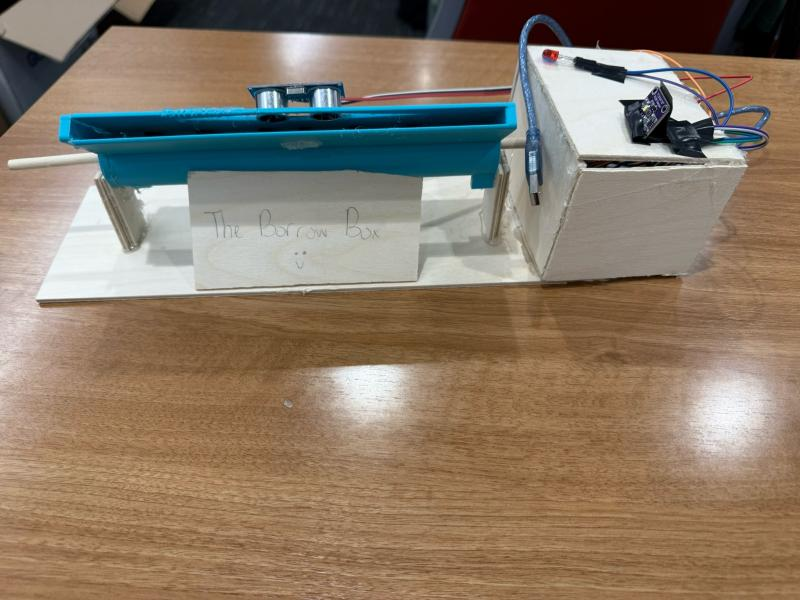
DAY 1InitialDAY 2Final
Constraints
9 hour initial prototype build window, from concept sketch to functional prototype
Limited materials and tools, fixed by the competition
Built entirely at UT's makerspace, limited to 3D printers and laser cutters
Must reliably dispense from a stock of 8+ pencils without jamming
Collaboratively designed in Onshape with a team of 4 people
Key Decisions
Gravity-fed intake and dispensing mechanism with a servo for controlled release, which was chosen for mechanical simplicity and speed to build under a tight time limit.
Color sensor with color-coded paper slips to identify which student borrowed a pencil. This decision was driven by the parts actually available to us rather than being the "ideal" ID method.
LED indicator for checked-out status and pencil tracking, which was a simple, physical, solution that was quicker to assemble than a screen or app-based tracker.
Iteration
Day one, we built a smaller proof-of-concept dispenser with two LEDs to demonstrate the check-out logic and
tracking capabilities for two students. From there, two real problems forced design changes: our first
3D-printed pencil-holding barrel didn't have slots wide enough to actually hold pencils, and time pressure
meant switching to a laser-cut version instead, which was a less precise fit, but one we could fabricate fast
enough to finish. Separately, the first intake was too wide, which let multiple pencils jam together going in;
narrowing the intake in the final version solved it. The final prototype held 8+ pencils, scaled to a real
classroom-sized group.
Status & Result
Over the two day competition, we built two functional prototypes, presented our designs twice, and were
awarded the Best Technical Design among 10+ competing teams.
Retrospective
The biggest problem of the competition wasn't a design flaw, it was a manufacturing-time miscalculation:
choosing to 3D print the largest component (the pencil barrel) ate hours we didn't have, pushing final assembly
to the last minutes and leaving us gluing pieces together under pressure. The real lesson from building
end-to-end in under a day: under tight time constraints, a design has to be optimized for manufacturability as
much as for performance, because the best-performing part on paper is worthless if you can't finish building it
in time.